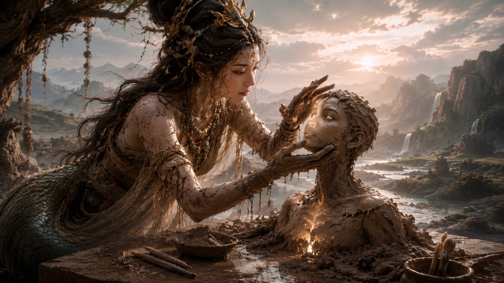
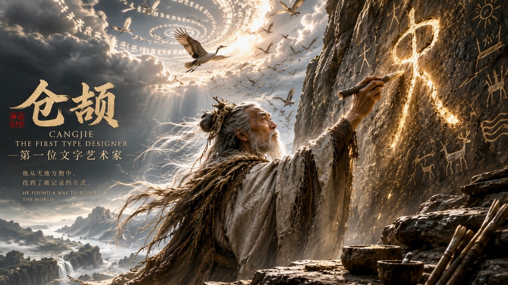
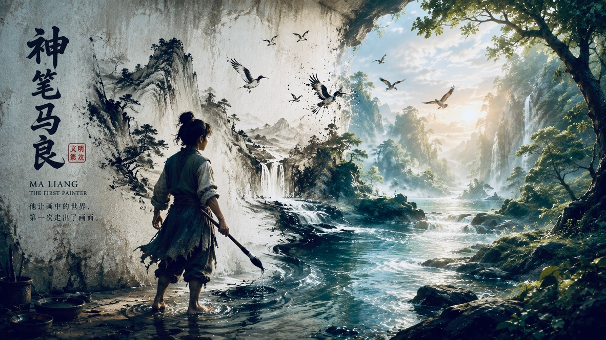
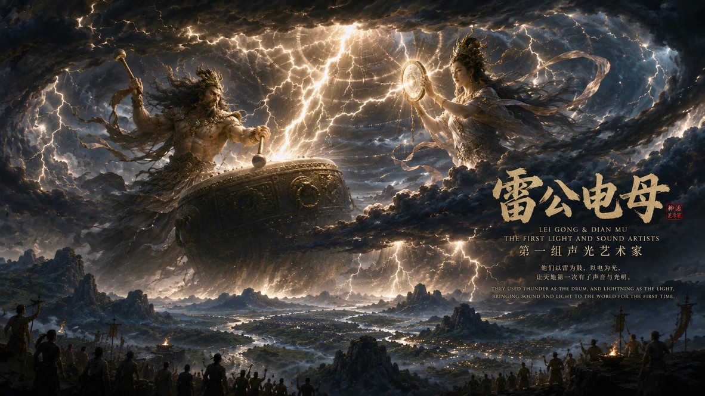
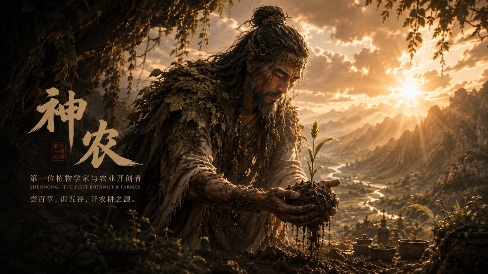
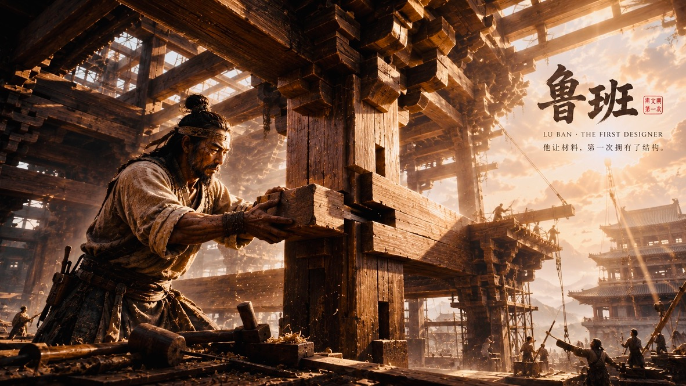
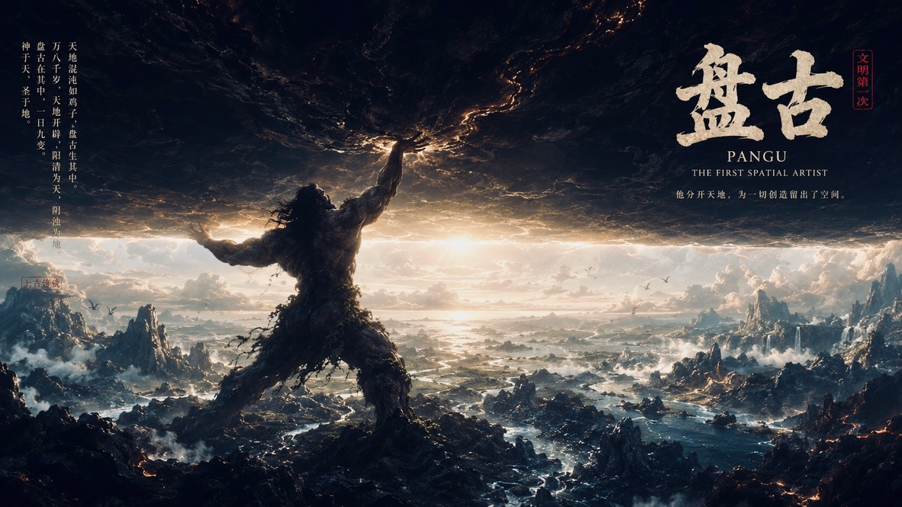

神话里的创造者
如果把熟悉的神话人物，看作正在创造的艺术家，会出现怎样的画面？这组作品从塑形、造字、奏乐到营造空间，重新想象那些创造的瞬间。


这一组的想法让人物正在做的事，
让人物正在做的事，
成为画面的中心。
我用今天熟悉的创作方式，重新看这些神话与传说：塑形、文字、音乐、绘画，也包括材料与空间。每个人物都有一个具体的动作，周围的世界也随之发生变化。
这是一组关于创造的视觉想象。海报中的“第一位”，也是这个想象的一部分。
看 15 秒伏羲短片 ↗伏羲 · 让琴声，
流进山水之间。
从一幅海报延伸出的 15 秒短片。琴弦、飞鹤与水流，把画面里的节奏继续展开。

让想法，
留下可以看见的痕迹。
仓颉把文字刻进山崖，马良让山水走出画面。一个留下符号，一个让想象成真。






从一株幼苗，
到一根丝线。
有些创造发生在宏大的天地间，也有些就藏在手中。神农与嫘祖，让这组画面慢下来，靠近植物、材料和触感。



让材料成形，
也为创造留出空间。
从鲁班手中的木构，到盘古撑开的天地，尺度越来越大，创造的动作始终清楚。



